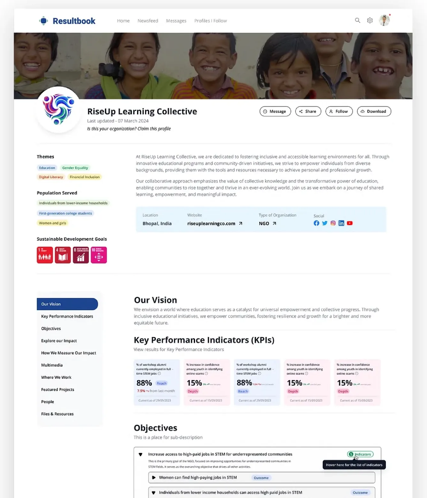
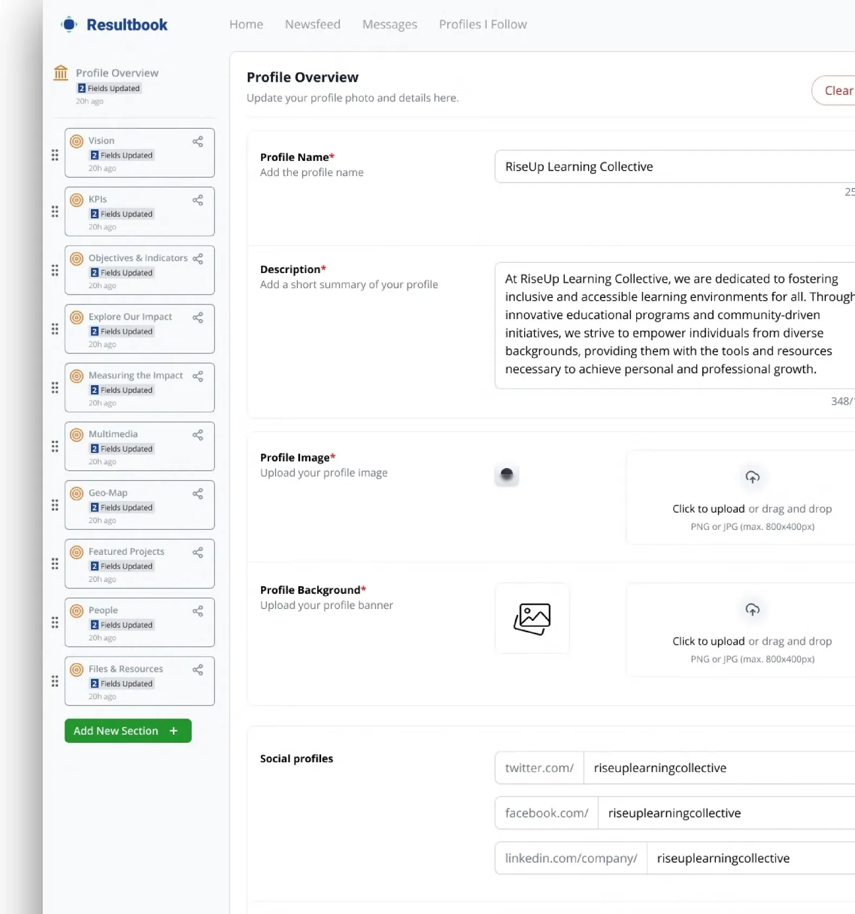
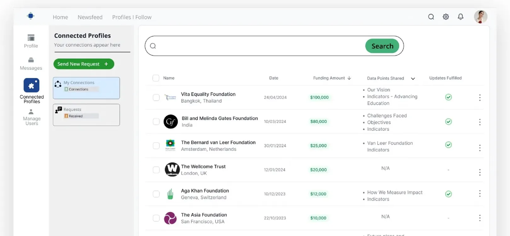
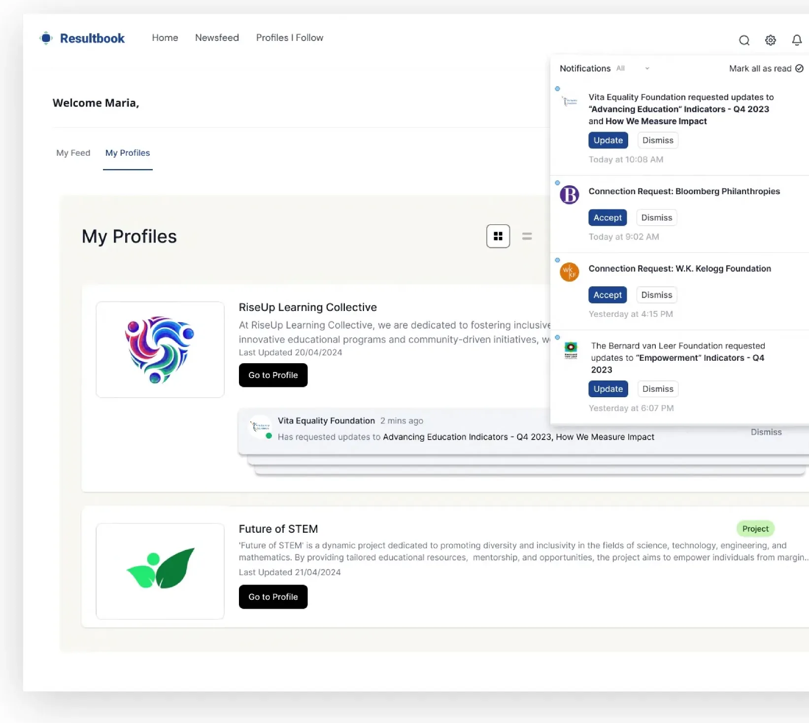
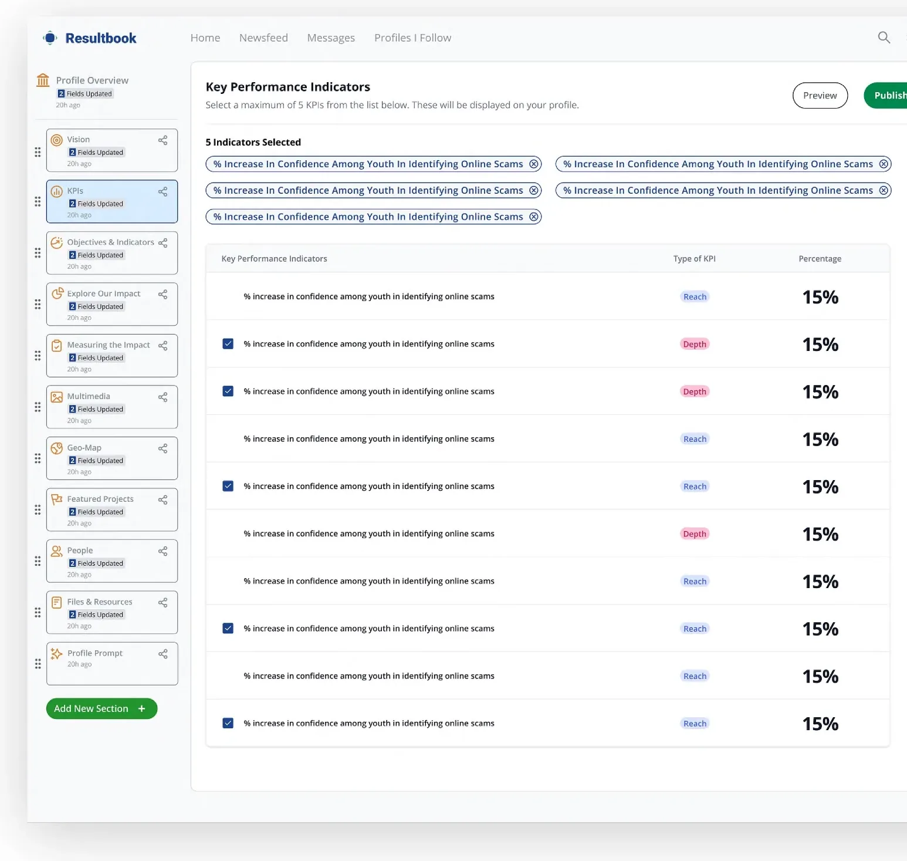

NGO profile creation
Organisations build and manage their profile content from the back end.
Enterprise product design · Social impact
We worked with Vera Solutions, which builds data solutions for social change, to design Resultbook: a digital platform connecting investors with the impact makers solving the world’s most pressing problems. It’s Vera’s second flagship product.

The brief
Impact investors want to manage their social good portfolio with the same clarity as any other portfolio. The organisations they fund, often NGOs working across several geographies, need a simple way to show their work, report their results and keep funders updated.
Resultbook brings both sides onto one platform, harnessing data so investors can see the impact they’re funding and impact makers can prove it.
We designed five core features around that exchange:
Organisations build and manage their profile content from the back end.
A filterable public profile, kept up to date with the impact data funders need.
Funding updates exchanged between investors and investees.
Multiple profiles across geographies, managed from one account.
KPI-by-KPI impact reporting that goes public once published.
Features




Approach
Following an agile way of working, we constantly tested ideas, strategy and assumptions so the end result stayed aligned with end users’ needs and goals.
Key tasks handled
Tech stack
As an MVP, 0-to-1 design firm, we build custom products on top of existing UI components. It helps ship faster and shortens the time to market.
Launching a flagship product?